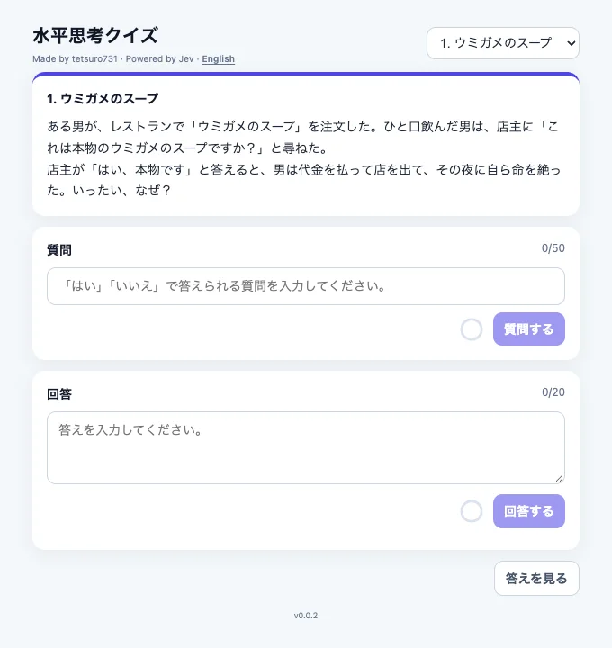

体験
入力は自由な文章だが、出題者の返事は最初から「はい」か「いいえ」に限られる遊びである。答えの形が決まっているので、Jevの出力をそのまま会話の一言にできる。
- 作者は、ルールベースでは言い換えに対応できず、チャット型のLLMでは「はい／いいえだけ」を守らせる手間と費用がかかり、BERTの追加学習は問題を足すたびに負担になる、と比較している。
- つまずいたのは否定疑問文である。「〜しませんでしたか？」に対し、実際にしていなければ、日本語では「はい、していません」、英語では「No」になる。Jevへの指示を英語で書き、返ったYes/Noを日本語に直して表示していたため、否定疑問文で意味が逆になった。指示を日本語にしたところ解消した、と作者は書いている。
- これは、判断そのものではなく、判断の値を表示の言葉へ直す段で起きた誤りである。型として正しい値が、画面の文言では逆の意味になりうる。
- 質問と回答に文字数の上限があり、入力欄が分かれている。「答えを見る」で、当てられなくても抜けられる。
- 作者は、病気の判断や採用の判断のように精度が重く問われる用途には向かず、人のチェックが要ると書いている。
- 判定が曖昧なとき（はい・いいえのどちらとも言えない質問）の扱いは、記事からは分からない。
キャプチャ
{kind=link}

（原寸の画像を開く）見る箇所右上の問題の選択、問題文のカード、「質問」の欄（50字まで、「はい」「いいえ」で答えられる質問を入れる案内）と「質問する」、「回答」の欄（20字まで）と「回答する」、「答えを見る」、見出し下の「Powered by Jev」とEnglishへの切り替え
入力から画面の変化まで
-
判断への入力
プレイヤーが自由に書いた質問（50字まで）、または真相の回答（20字まで）。問題と答えは、あらかじめ用意した5問のデータからアプリが参照する。
-
Jevの判断
質問に対する「はい／いいえ」の判定と、回答が真相に当たっているかの判定。記事の構成図では、Jevから「判定・スコア」が返る。どの質問型を使ったかは記事に書かれていない。
-
結果がUIをどう変えるか
判定が画面の応答として返る。記事は、英語のYes/Noを日本語の「はい／いいえ」に直して表示していたと述べている。応答の見た目と、スコアの出し方は確かめていない。
- 判断型の見立て
- 不明出典から判断できない
- 記事は、はい／いいえの判定とスコアがJevから返ると述べるが、質問の型は書いていない。取得した初期画面にも出ていない。
Jevとの適合
自然言語の入力を、決まった少数の答えへ対応づける。問題を足しても追加の学習が要らず、作者の申告では検証で何度も呼び出しても費用は1円未満だった。判定の正しさは記事では評価されていない。
確認範囲と未確認事項
日本語の作者によるQiita記事と、記事が示す公開アプリの初期画面を確認。記事には画面の画像がなく、掲載したのは質問を送る前の初期画面である。この作業では質問も回答も送っておらず、判定が画面にどう出るかは確かめていない。否定疑問文で表示が逆になった問題と、その解消は作者の申告による。
- 確認済み記事本文と構成図、2026-09-21に取得した公開アプリの初期画面（問題の選択、問題文、質問と回答の欄、文字数の上限、「答えを見る」、「Powered by Jev」の表記）
- 未検証質問や回答を送った後の画面、判定の正しさ、スコアの表示、否定疑問文での現在の挙動、英語版、ソースコード
- 推定扱い質問型は不明として扱う。はい／いいえの判定という説明だけでは、ChoiceかNoulかを決められない
- 引用公開アプリの初期画面を2026-09-21に取得し、アプリの表示範囲を切り出した。入力は行っていない。権利は作者に帰属する